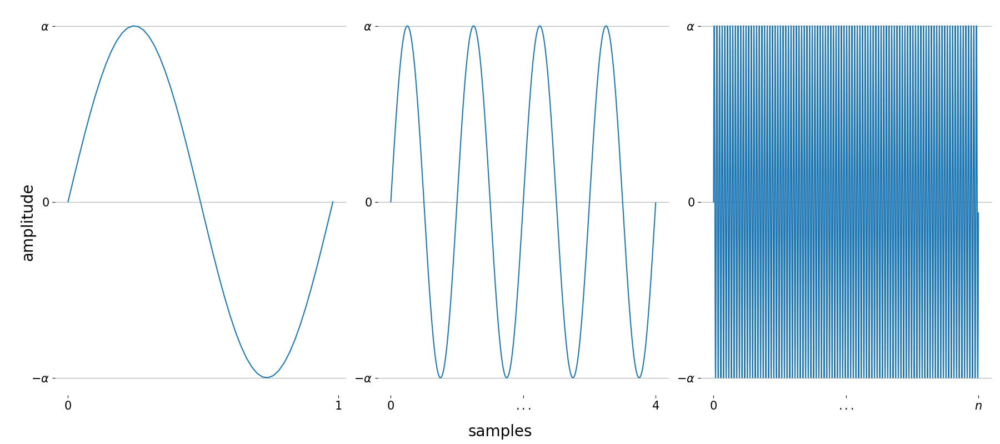
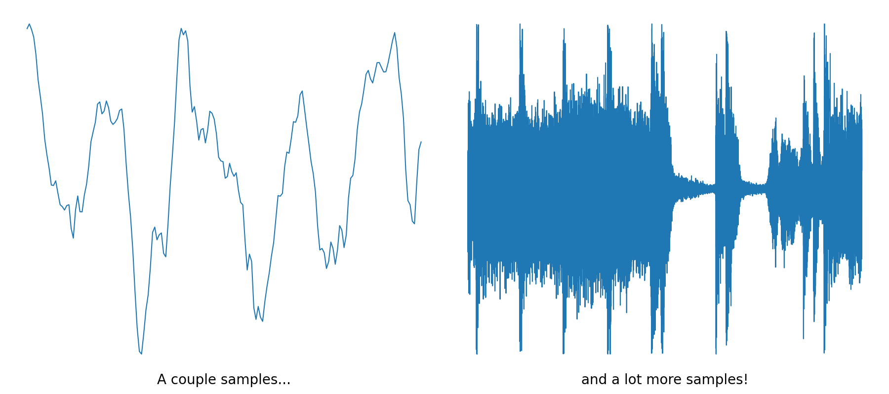
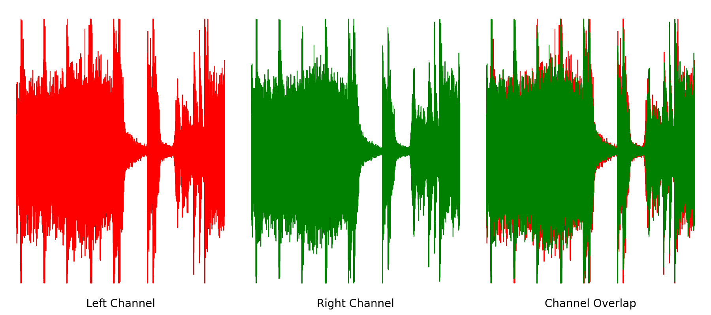
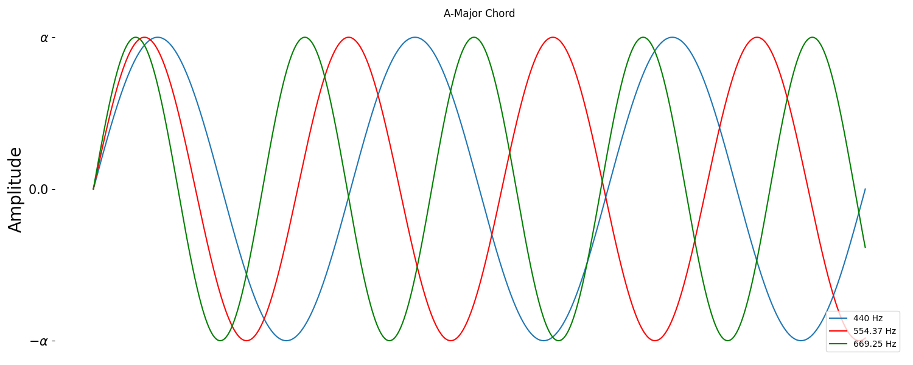

Introduction
Understanding the mathematical logic behind sound- how certain factors effect what we hear and how we hear it- is the first step into audio signal processing. You should likely understand some basics about trigonometry and periodic functions to best understand the content. This article will run through basic vocabulary, explain how sound is processed and stored digitally, and demonstrate basic audio processing techniques in Python.
Waveforms
Sound is the displacement of air particles over time. We can describe the displacement of air particles graphically as a waveform, which plots the displacement of particles (called amplitude) in terms of time $t$. Take, for example, a simple sine function $f(t) = \alpha\cdot \sin(2\pi \cdot t)$, where $\sin(2\pi \cdot t)$ oscillates (moves in a constant range indefinitely), and $\alpha$ is a constant defining the upper and lower bounds of the function’s amplitude. Below, I’ve plotted one complete wavelength (the length of one complete cycle), four complete cycles, and a much larger number of cycles.
Although all sounds can be defined as a collection of sine waves, the human ear doesn’t hear the individual samples, or cycles of a oscillating function. Instead, samples are played at such a high rate that the human ear can’t audibly pinpoint specific samples. Instead, the samples combine the into one cohesive sound. Standards for sample rate, or the number of samples played per second in Hertz (Hz), can range from 44,100 Hz to nearly 192,000 Hz in professional studios.
If human hearing only spans the range of 20 Hz - 20,000 Hz, why do we use much higher sample rates? The answer is that, in order to process an audio signal without losing information, we need need to use a sample rate that is at least twice as big as the highest frequency sound in the signal. This is known as the Nyquist Limit, and is the reason signals typically use a sample rate in the 40-48 kHz range. And while human hearing isn’t capable of capturing anything beyond this range, music producers often use even higher sample rates as a means of capturing higher-resolution audio.
Basic Waves and Sounds
All audio signals can be described as some manipulation of sine waves, through the processes of additive and subtractive synthesis. Essentially, this allows us to create whatever sounds we like by combining and manipulating simple sines waves to form much more complex sounds. Here’s a plot of a couple of frames versus a much larger snippet of sound.
From here, we can introduce more concepts related to audio signals. For example, sound can depend on the number of channels used to output an audio signal. You’re likely used to hearing stereophonic sound, where a left and right channel output specific audio signals to the left and right side of a listening body.
This allows for some neat tricks, such as hearing something coming from one side of you and not another. In a similar vain, monophonic sound uses one channel for all audio, meaning that you’ll hear the same sound across all speakers, even if you’re wearing a pair of headphones or sitting in a multi-channel studio.
Another major concept to keep in mind is that, considering that all sounds are a combination of periodic functions, the process of editing sound is a matter of transforming a sound’s waveform mathematically to make get a desired sound. As you read and run the provided code snippets, I highly suggest graphing and considering what sort of transformation you’re applying to the waveform and how that changes the overall sound.
Audio Editing through Code
To start, in your Python development environment of choice, we’ll import a couple important libraries:
import numpy as np
import matplotlib.pyplot as plt
from scipy.io.wavfile import read, write
Numpy is the go-to library for large, multi-dimensional arrays and contains a lot of powerful tools that we’ll use to simplify our code on the mathematical side. Matplotlib is the standard Python library for representing data graphically, and we’ll use pyplot to visualize our waveforms. Finally, Scipy is also a well-loved scientific computing library, and we’ll import its read and write functions from the io.wavfile module to import .wav files.
💡 Plenty of other sound file types (mp3, aiff) and audio processing libraries (librosa) exist. While these are also worth checking out, it should be stated that .wav is the most common for audio processing.
With our necessary libraries imported, grab your favorite .wav sound file and load it with
path = '/path/to/filename.wav'
sr, sample = read(path).astype('float32')
where sr and sample are the sample rate and sample data of our sound, respectively. The last line uses astype('float32') to convert our data into the “float32” WAV format, which normalizes our data to the range [-1.0, 1.0]. There are also other type ranges which you can find the numpy dtypes to on the scipy.io.wavfile.read documentation page. Keep in mind that this also scales our amplitude to the range [0.0, 1.0], which will be important soon.
Without immediately discussing periodic functions or other technical details, we can already do some basic audio processing. For example, we can do some basic audio editing with list splicing. The notation for python list splicing is array[start:stop:step], where this code represents an array parsed in the range [start, stop) every step number of samples.
a = sample[0:4 * sr] # Returns the first 3 seconds of the sound
b = sample[4 * sr:0] # Returns the last 3 seconds of the sound
For list splicing, if you leave the arguments for
[start:stop:step]empty, their values will default to0,len(array)and1, respectively.
Since sample rate is defined as the number of samples played per second, we can return snippets of our original sample- down to the individual sample- without needing to guess-and-check values for the desired range.
We can also use list splicing and Numpy’s repeat() function to do some very rudimentary speed-up and slow-down effects. To speed up a sample, simply step through your sound file with an step integer greater than 1. To slow down a sample, duplicate each sample in place some integer number of times greater than 1. However, these methods aren’t the best, but we’ll discuss why and better methods to use in a future article.
speed_up = sample[::2] # Speed up the sample by a factor of 2
slow_down = np.repeat(sample, 2, axis=0) # duplicates every sample in place,
# (slowing by a factor of 2, or
# speeding up by a factor of 1/2).
Finally, you can save and listen to your edited sample by writing the result back to a .wav file.
write('newfile.wav', sr, variable_name)
⚠️ As I mentioned above about multi-channel sound, if you decided to use your own .wav file, your
samplefile may contain more than one row, meaning it is a stereo or multi-channel sound file. In this case, you’ll need to make sure that your operations are applied to every row of the sample array.
Sounds from Scratch
While being able to edit existing audio files is incredibly useful, it’s even more useful to be able to create our own sounds from scratch. To start, we’ll return to the sine function we saw earlier, but instead make an addition:
$$ g(t) = \alpha \cdot \sin(\underline{f}\cdot 2\pi \cdot t) $$
Initially we had only defined our function in terms of time and amplitude, but now we’ll introduce a new constant $f$ for frequency. This value defines the number of complete periods or cycles of our function we’ll complete with respect to our sample rate. To create a function for playing a single, specific frequency in Hertz, all we have to do is substitute that value in for $f$:
sine = lambda time, freq, amp=1: amp * np.sin(freq * 2 * np.pi * time) # general sine function
sr = 48000 # sample rate
duration = 3 # number of seconds to play the sample for
t = np.linspace(0, duration, num=sr * duration) # time space for our sine function.
a_natural = sine(t, 440)
write('a440.wav', sr, a_natural)
In the following code excerpt, I use a lambda function, which is essentially a one-line python function, to code the provided equation. This function takes in a time space time and frequency freq, and the amplitude amp is defaulted to 1, the maximum volume. np.linspace() generates an array of evenly-spaced values from a provided range with length num. In this case, the time space of this sample is from 0 to duration seconds, with (duration * sr) number of samples in between the time space. The code above returns this .wav file:
To make our sound more complex, we can sum our sample element-wise with other samples, but this introduces a new problem. If we try to sum two frequencies with maximum amplitudes, the resulting sound will be very loud and distorted. This is due to the summed values of our function going beyond the amplitude range for the individual components. As a result, values beyond this range will fold over, causing aliasing which distorts our summed sound with samples above the Nyquist Limit. To combat this, we’ll need to element-wise divide our sample array by the number of summed frequencies. This will scale the amplitude of the summed sample array with respect to our amplitude range, but we can still change the overall volume of our sound with our amplitude constant.
$$g(t) = \frac{\alpha}{|F|} \sum_{i=1}^{|F|} \sin{(F_i\cdot 2\pi \cdot t)},\\ \space \\ \alpha \in [0.0, 1.0], \quad F=\{f \mid 20 \le f \le 20,000\}$$
# Sine function for multiple frequencies
def sine(time:float, freqs:list[float]=[440], amp:float=1) -> list[float]:
signal = np.zeros_like(time)
for f in freqs:
signal += np.sin(f * 2 * np.pi * t)
return (amp/len(freqs) * signal).astype('float32')
# Defining the time space
sr = 8000 # sample rate
duration = 3 # number of seconds to play the sample for
t = np.linspace(0, duration, num=sr * duration) # time space for our sine function.
# Making an A-Major chord!
a_major = sine(t, [440, 554.37, 669.25])
write('a_major.wav', sr, a_major)
In plotting this summed sound and zooming in on a few samples, we can also see how the individual sine waves overlap.
